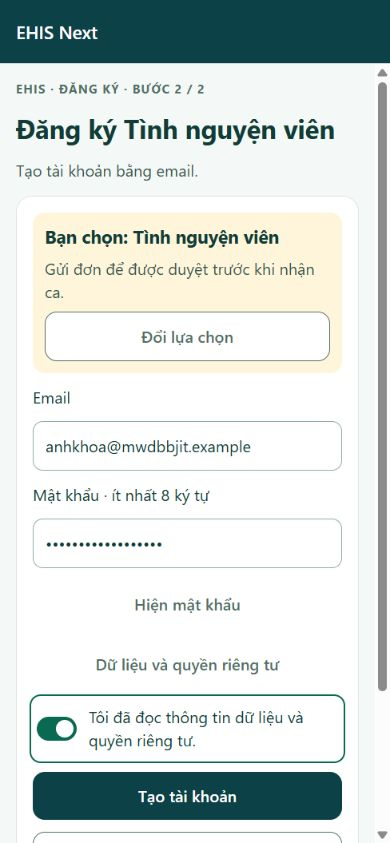
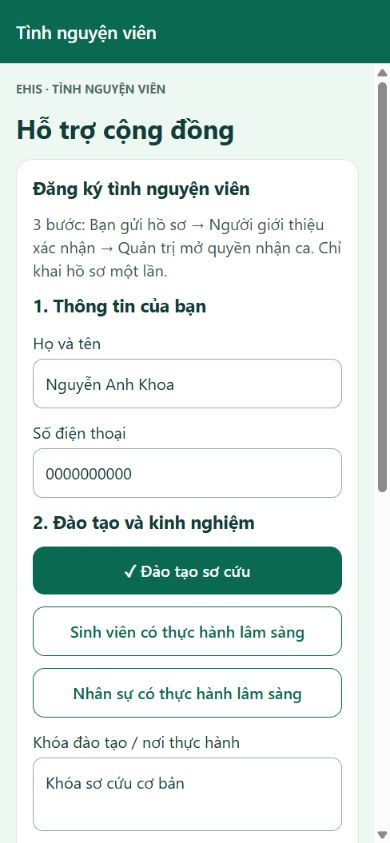
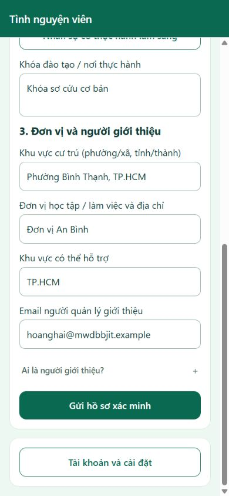
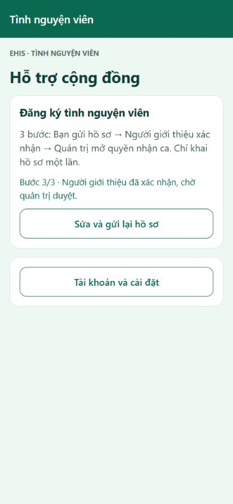
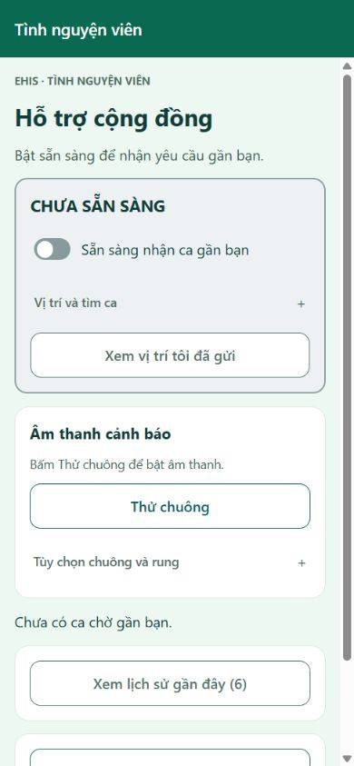

TNV: đăng ký → hồ sơ → chờ duyệt → được duyệt

1. Chọn TNV
Thao tác: Mở đăng ký.Quan sát: Chọn tình nguyện viên.
Câu dẫn: “Chọn tình nguyện viên.”
2026-11-12T08:57:56.470Z

2. Tạo tài khoản TNV
Thao tác: Nhập email, mật khẩu và xác nhận dữ liệu.Quan sát: Sẵn sàng tạo tài khoản.
Câu dẫn: “Sẵn sàng tạo tài khoản.”
2026-11-12T08:58:07.474Z

3. Thông tin ứng tuyển
Thao tác: Điền danh tính và đào tạo.Quan sát: Chưa gửi.
Câu dẫn: “Chưa gửi.”
2026-11-12T08:58:21.441Z

4. Chỉ định người giới thiệu
Thao tác: Điền đơn vị và email quản lý.Quan sát: Người quản lý sẽ đối chiếu hồ sơ.
Câu dẫn: “Người quản lý sẽ đối chiếu hồ sơ.”
2026-11-12T08:58:21.482Z

5. TNV chờ người giới thiệu
Thao tác: Gửi hồ sơ.Quan sát: Chưa được nhận ca.
Câu dẫn: “Chưa được nhận ca.”
2026-11-12T08:58:30.737Z

6. TNV chờ quản trị
Thao tác: Người giới thiệu đã xác nhận.Quan sát: Chờ mở quyền nhận ca.
Câu dẫn: “Chờ mở quyền nhận ca.”
2026-11-12T08:58:43.995Z

7. TNV được duyệt
Thao tác: Mở lại TNV đã duyệt sau chỉnh sửa giao diện.Quan sát: Tài khoản được duyệt, đang tắt Sẵn sàng; ảnh chụp lại sau các ca.
Câu dẫn: “Tài khoản được duyệt, đang tắt Sẵn sàng; ảnh chụp lại sau các ca.”
2026-11-12T09:18:51.863Z